International Ankara Jazz Festival
2007-2015
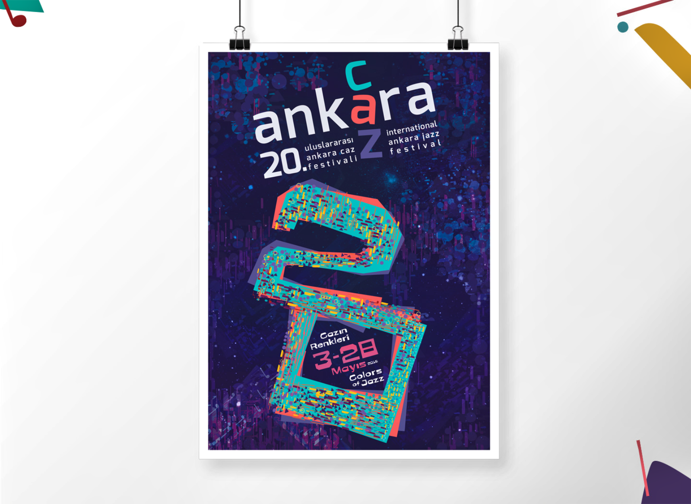
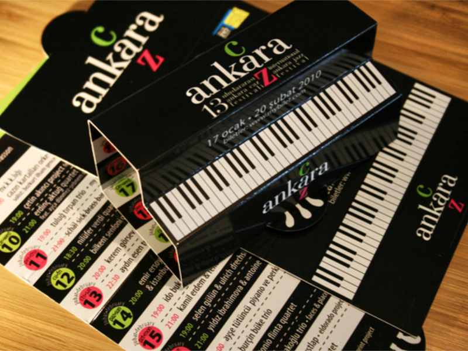
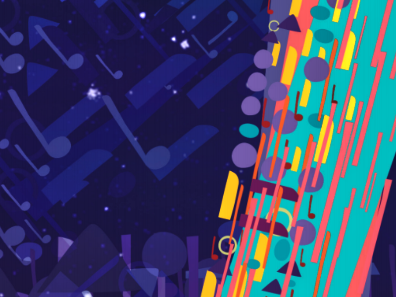
Lead designer for Turkey's premier jazz festival from 2007-2015. Developed comprehensive visual systems spanning 20+ touchpoints: from poster campaigns to environmental installations. Managed brand evolution while maintaining visual consistency. Created design frameworks that supported festival growth from regional event to Europe Jazz Network member with 50,000+ annual attendance. Design templates remain in active use.
28 festivals • 15 years • 50,000+ annual attendees • Europe Jazz Network member
Editorial & Data Visualization Design for Teyit
2017-2019
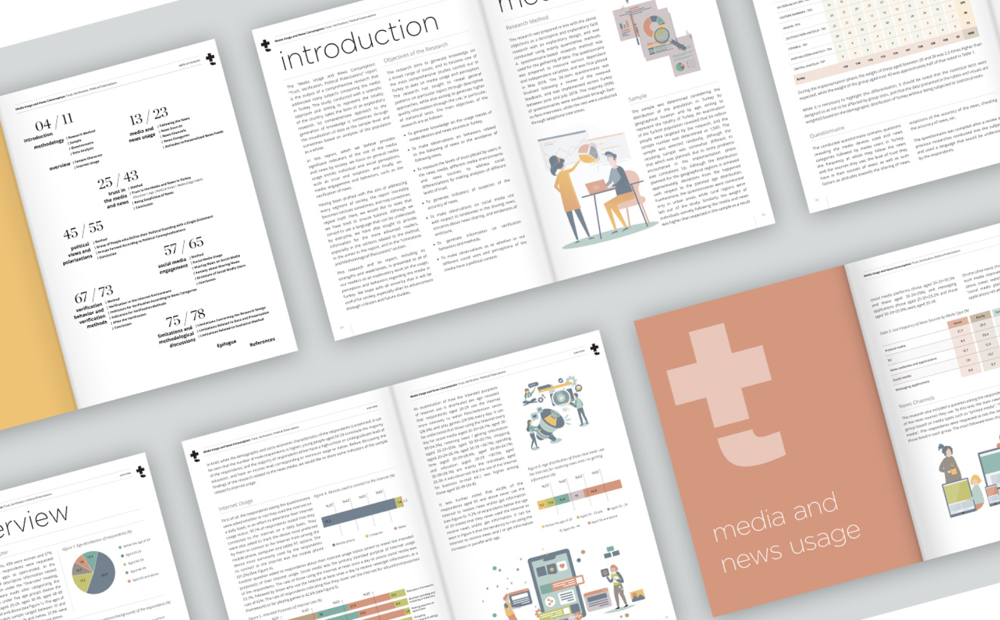
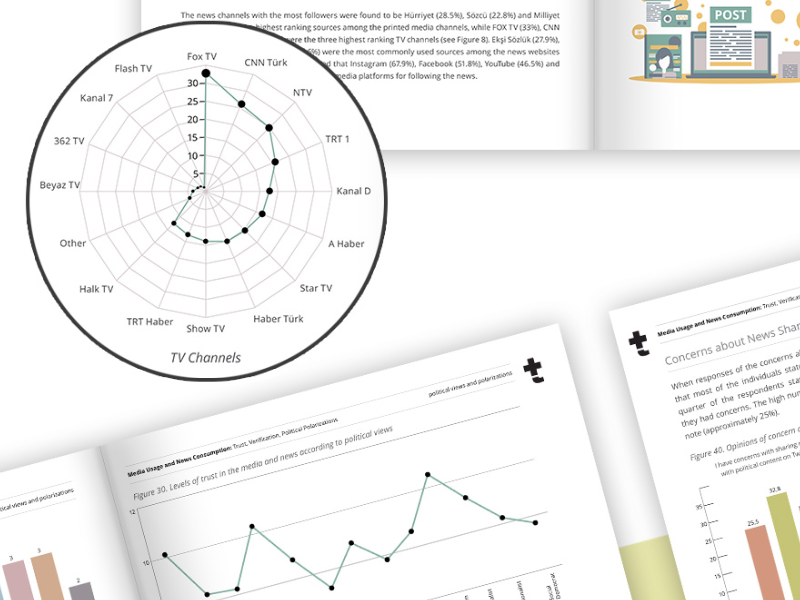
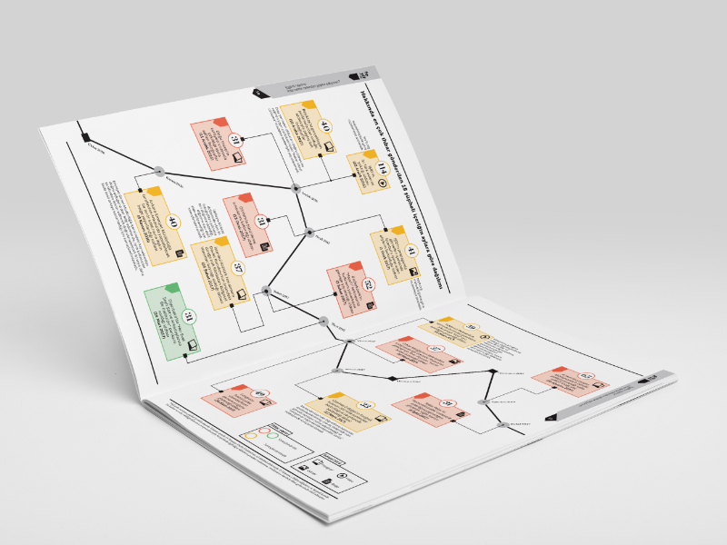
Comprehensive research publications were developed to analyze misinformation patterns, supported by visual communication systems for over 370 pages of bilingual content. Data visualizations translated complex statistical research into clear and accessible formats.
Civil Voices Festival
2009
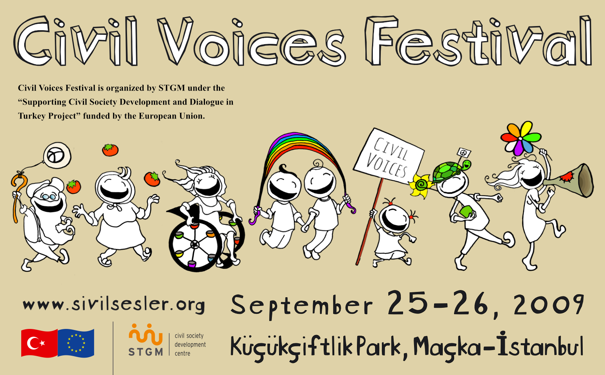
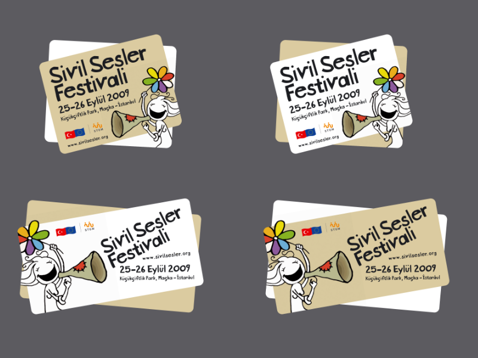
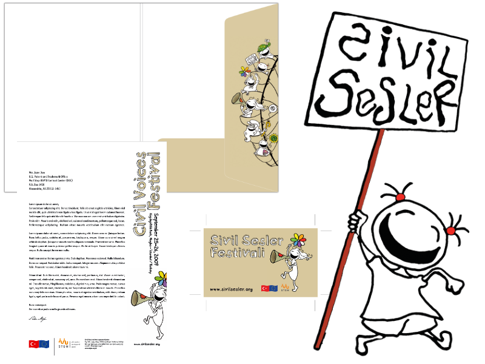
The festival brought together civil society organizations from across Turkey to share experiences, collaborate, and strengthen dialogue through workshops, panels, forums, and exhibition stands. Addressed a broad range of rights issues, including children’s, disability, youth, refugee, women’s, and environmental rights. Delivered the full event identity: large-scale vinyls, billboards, roll-ups, posters, brochures, maps, directional signage, feather flags, letterhead, document folders, stage backdrops, bunting, and exhibition stand layouts.
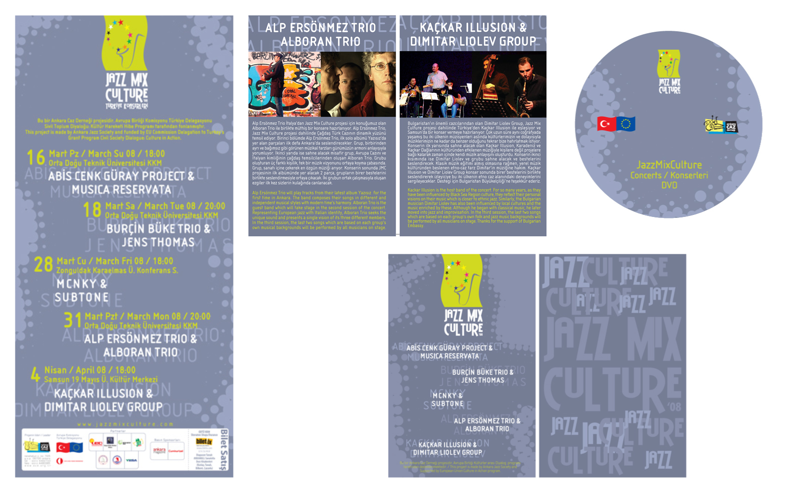
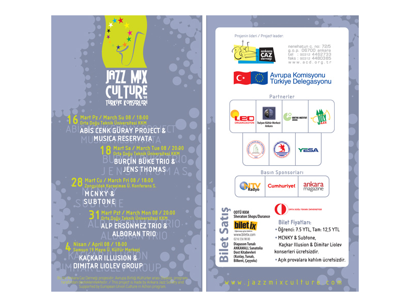

A visual identity and printed collateral for Jazz Mix Culture, a cultural initiative aimed at creating a musical bridge between Turkey and European Union countries. The campaign highlights cross-cultural collaboration, inviting Turkish and European musicians to share traditions, instruments, and styles. The project was developed and delivered within a very short timeframe.